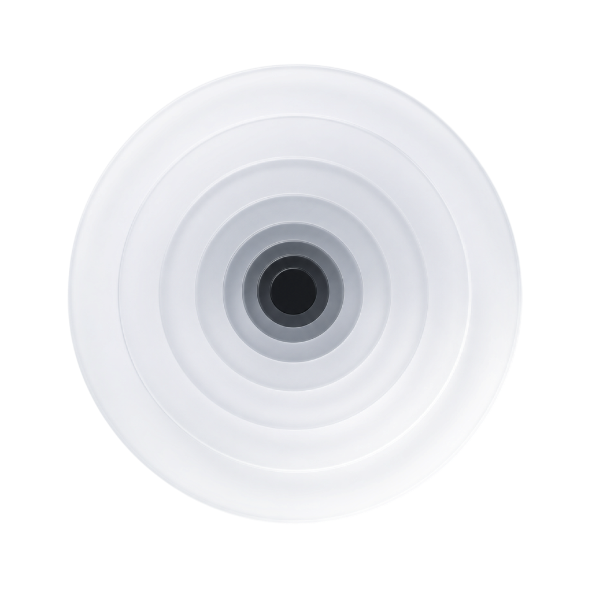
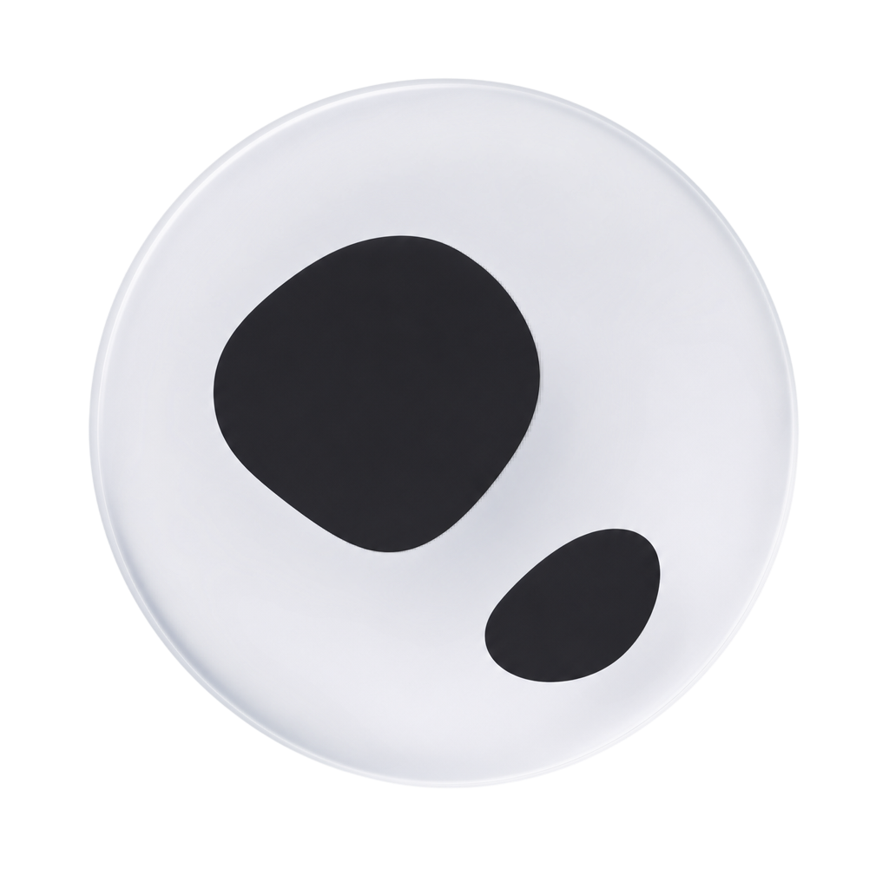
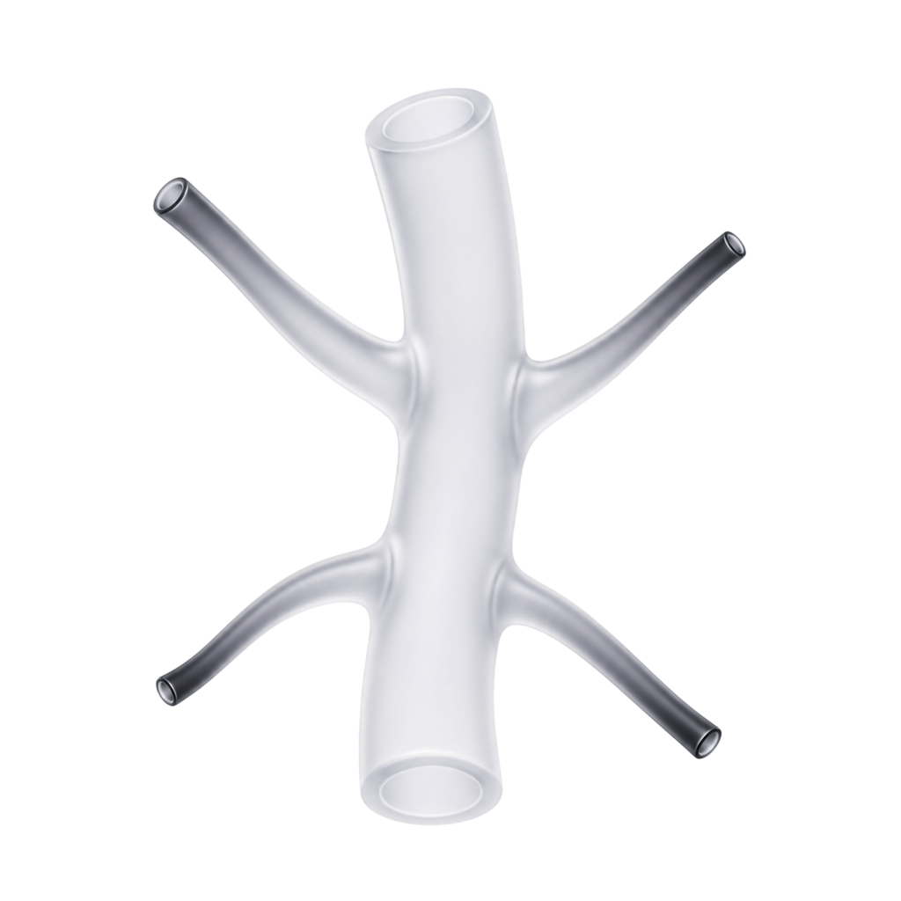

Quelques imperfections inflammatoires ponctuelles et d'intensité légère — leur impact sur le score global reste limité.
Lésions inflammatoires actives. Une routine séborégulatrice ciblée aide à les apaiser.

Points noirs rares et localisés, sans obstruction marquée des pores — un signe mineur sur l'ensemble du diagnostic.
Pores obstrués par du sébum oxydé. Les exfoliants type BHA aident à les déloger.
Des marques résiduelles modérées subsistent après d'anciennes imperfections, encore visibles sur les joues — elles pèsent sur le score.
Les marques résiduelles s'estompent avec des actifs éclaircissants ciblés.
Pores modérément visibles sur la zone T, signe d'une activité sébacée présente mais maîtrisée.
Des pores visibles signalent souvent une production de sébum à réguler.
Grain de peau globalement lisse, avec un renouvellement cellulaire régulier — un point favorable au score.
Le grain reflète le renouvellement cellulaire. Un exfoliant doux le lisse progressivement.
Aucune desquamation détectée : la barrière cutanée retient bien l'eau, sans zones qui pèlent.
Peau qui pèle — souvent un signe de déshydratation ou de barrière cutanée fragilisée.
Teint plutôt uniforme, avec de légères variations de pigmentation sans réelle irrégularité visible.
L'uniformité du teint dépend de la pigmentation et de la microcirculation.
Teint frais et plutôt lumineux, sans signe marqué de fatigue cutanée à l'analyse.
Un teint terne traduit souvent un manque d'hydratation ou des cellules mortes en surface.

Quelques taches pigmentaires visibles, d'origine post-inflammatoire, surtout sur les joues — un facteur qui abaisse le score.
Les taches post-acné sont les plus réactives aux actifs dépigmentants.
Rougeurs localisées sur le nez et les ailes, traduisant une réactivité vasculaire ponctuelle.
Rougeurs localisées — sensibilité vasculaire ou réactivité de la barrière.
Brillance marquée sur la zone T, signe d'une production de sébum à réguler — c'est l'un des éléments qui pèsent le plus sur le score.
Une brillance marquée sur la zone T indique une régulation sébacée à travailler.

Aucun vaisseau apparent : pas de signe visible de fragilité capillaire ou de couperose.
Petits vaisseaux dilatés liés à une sensibilité vasculaire. À traiter en douceur.
Ridules discrètes, principalement liées à l'hydratation, sans installation profonde dans la peau.
Ridules de déshydratation ou d'expression. Hydratation et antioxydants les atténuent.
Aucune ride installée : la structure cutanée reste ferme, un point clairement positif pour le score.
Aucune ride installée. Prévention : protection solaire et antioxydants au quotidien.
Cernes modérés d'origine pigmentaire sous les yeux, accentuant l'aspect fatigué du regard.
Les cernes pigmentaires répondent bien aux dépigmentants et à la vitamine C.
Aucune poche détectée : le contour de l'œil reste bien drainé, sans gonflement.
Aucune poche détectée. Le contour de l'œil reste bien drainé.